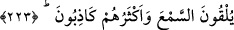
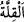
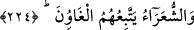

benzerlik vardır. Ancak Rasûlullah (s.a.) ise bu kötü vasıflardan uzaktır, berîdir.
Şeytanların O’nun üzerine inmesi imkânsızdır.
223. Bunlar, (şeytanlara) kulak verirler ve onların çoğu yalancıdırlar.
“Bunlar, (şeytanlara) kulak verirler.” Yâni çok yalancı ve iftiracı olan kimseler
şeytanlara kulak verirler. İlimlerinin noksanlığından dolayı onlardan bazı vehimler ve
emâreler/işâretler alırlar. Bu şeylere kendi bâtıl tahayyüllerine göre, çoğu gerçeğe
uygun düşmeyen hurâfeler eklerler. Şeytanların sözüne kulak verirler ve onlardan yalan
haberler alırlar. Onlar üzerine başka yalanlar da eklerler.
“Ve
onların”
iftiraya
düşkün
olanların
“çoğu”
söyledikleri
sözlerde
“yalancıdırlar.” Halbuki Muhammed (s.a.) böyle değildir. O gayb ile ilgili ne haber
vermişse hepsinde sâdıktır, doğrudur.
Âyetteki “çoğu” kelimesi “hepsi” mânâsınadır. Yâni onların hepsi yalancılık sıfatıyla
mevsuftur. Tıpkı “Size haram kılınan bazı şeyleri helal kılmam için” (Âl-i İmran,
3/50) âyetindeki “bazı” kelimesi gibi ki “tamamını” demektir. Bu, “__WORD__ (azlık)”
ifâdesinin bir çok yerde “yokluk” anlamında kullanılmasına benzer.
Bazıları demiştir ki: “Âyetteki “çoğu” ifadesi, onların sözleri îtibarıyladır. Zatları
îtibarıyla değil ki onların çoğuna yalan nisbet edilmesi, onların azının doğrulardan
olmasını gerektirsin. Yine “iftiraya/yalana çok düşkün” demek, doğru konuşması
tamamen imkân dışı olacak kadar, sadece yalan konuşan demek değildir. Bilakis
yalanı/iftirayı çok konuşan demektir. Nâdiren de olsa zaman zaman doğru söylemesi
buna ters düşmez.
Keşfü’l-esrâr’da der ki: “Çoğu” denilerek onlardan Setıyh, Şıkk ve Sevad b. Kârib
istisnâ edilmiştir. Onlar Rasûlullah (s.a.)’den ve onu tasdikten çok bahseder, onun
peygamberliğine şehadet ederler ve insanları ona çağırırlardı.”
Hayâtü’l-hayevân’da der ki: “Şıkk ve Setıyh kâhin idiler. Şıkk tek eli, tek ayağı ve
tek gözü olan yarım bir insandı. Setıyh’ın ise kemiği ve parmak uçları yoktu, hasır gibi
dürülürdü. Rasûlullah (s.a.)’in bi’set günlerine yetişemedi.”
224. Şâirler(e gelince), onlara da sapıklar uyarlar.
Yani Kur’ân şiir, Muhammed (s.a.) de şâir değildir. Çünkü şâirlere dalâlette olanlar
ve sefihler tâbî olurlar. Muhammed (s.a.)’in tâbîleri ise böyle değildir. Bilakis onlar